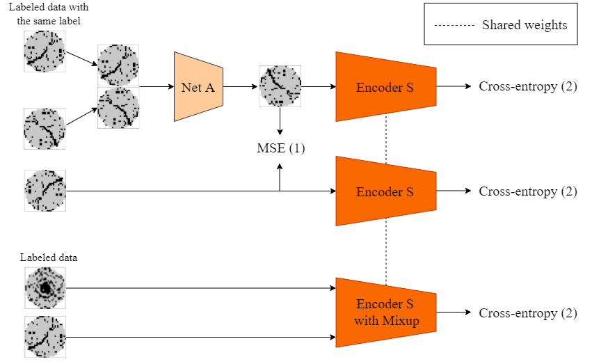
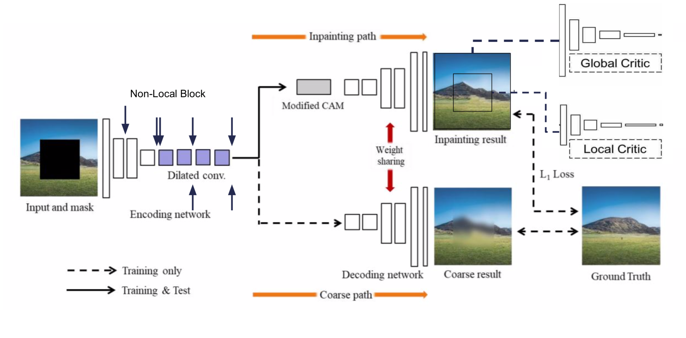
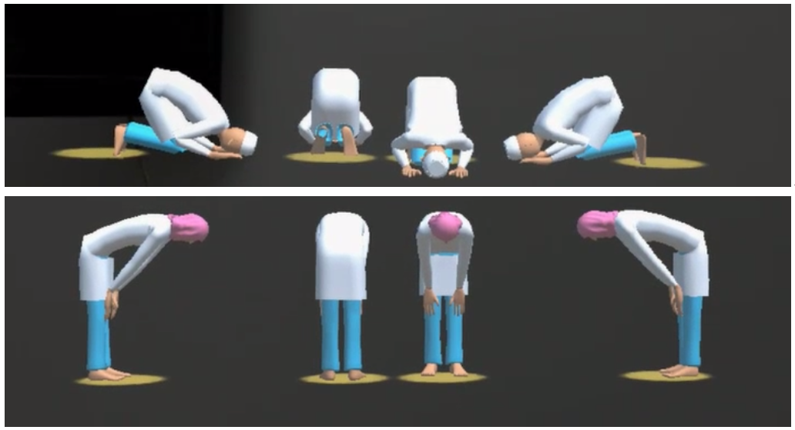

| Resume | |
I am interested in cloud optimization, artificial intelligence, and theory of evolutionary computation and genetic algorithms. In addition, I am familiar with and have been using R and Python programming languages for big data analysis and machine learning. With these technical backgrounds, I can extend my knowledge and learning capability to participate in the i5k workspace to develop dissemination, visualization, and curation tools for insect or arthropod genome projects. Moreover, my strong educational backgrounds in applied mathematics and statistics enable me to explore and perform innovative analysis on the data in the i5k Workspace.
|
|  |
|
|  |
|

|
|

|
|
|  |
| Abstract |
Certificate |
We developed learning tools for Islamic worship based on Augmented Reality (AR) technology and compared their efficacy with different tools in terms of learning effectiveness and user experience for both non-Muslims and Muslims. The textbooks and AR-based tools that simulated a usual learning scenario and a more advanced one with multiple views of virtual coaches are referred to as learning tools A, B and C, respectively. Our results indicated that the tool C ranks best in terms of learning effectiveness, followed by tools A and B. As for user experiences, the tool C also received highest scores among non-Muslim and Muslim groups. Learning tool B, equipped with stereoscopic demonstration of movements, did not result in a good learning effectiveness compared to learning tool A despite that users generally were more positive about the user experience toward tool B than A. Provided with better visual effects, tools B and C receive positive feedbacks, as reflected in their higher scores in user experiences. However, a better user experience does not necessarily result in a more effective learning, and a better learning effectiveness was observed for tool A.
@article{chao18radiotherapy,
title = {Radiotherapy Target Contouring with Convolutional Gated Graph Neural
Network},
author = {Chao, Chun-Hung and Cheng, Yen-Chi and Cheng, Hsien-Tzu and Huang, Chi-Wen and
Ho, Tsung-Ying and Tseng, Chen-Kan
Lu, Le and Sun, Min},
journal = {arXiv preprint arXiv:1904.02912},
year = {2019},
}
|
|
Template: this |